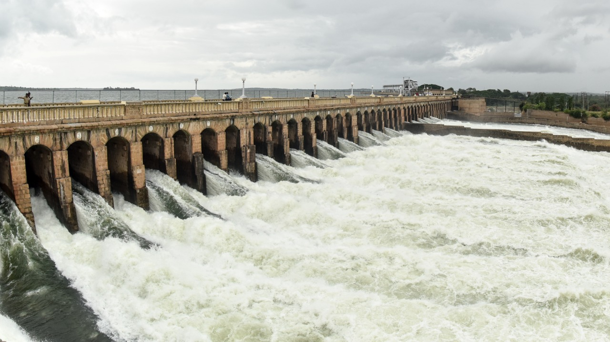

The Mysore Palace, also known as Amba Vilas Palace, is an architectural masterpiece and one of the most iconic landmarks in Mysore, Karnataka, India. It stands as a testament to the city's royal heritage and grandeur. The original Mysore Palace was constructed in the 14th century but was destroyed and rebuilt several times. The current palace was commissioned by Maharaja Krishnaraja Wadiyar IV and designed by British architect Henry Irwin. Construction began in 1897 and was completed in 1912. The palace is an exquisite example of Indo-Saracenic architecture, which blends Hindu, Muslim, Rajput, and Gothic styles.
The palace showcases a harmonious fusion of various architectural elements. It features a three-storied stone structure with a stunning facade adorned with intricate carvings, arches, and domes. The palace is surrounded by a large courtyard and has several gateways, including the magnificent Gombe Thotti (Doll's Pavilion) and Balarama Gate. The Durbar Hall, with its ornate ceiling and stained glass work, is the centerpiece of the palace.
The palace spans an area of about 245,000 square feet and consists of several courtyards, gardens, and buildings. The interiors of the palace are equally captivating, featuring elaborately decorated halls, corridors, and rooms. The walls are adorned with beautiful murals depicting scenes from Hindu mythology, portraits of the Wadiyar dynasty, and intricate floral patterns. The palace also houses a remarkable collection of antique furniture, royal artifacts, and treasures.
One of the highlights of the palace is the Golden Throne, which is displayed during special occasions and festivals. The throne is made of gold and was used by the rulers during important ceremonies. Adjacent to the throne room is the Ambavilasa, a grand hall where the royal family held private audience and receptions. The hall is known for its splendid chandeliers, ornate pillars, and intricate artwork.
An impressive light and sound show takes place at the Mysore Palace every day in the evening except for Sundays and public holiday., the palace is lit up with thousands of bulbs, creating a mesmerizing sight. The annual Dasara festival, celebrated with great pomp and show, attracts thousands of visitors. The palace becomes the focal point of the festivities, with a grand procession and cultural performances taking place in its vicinity. A portion of the palace has been converted into a museum, showcasing a vast collection of royal memorabilia. The museum displays weapons, costumes, musical instruments, paintings, and other artifacts that offer insights into the history and lifestyle of the Wadiyar dynasty. Visitors can explore the museum and gain a deeper understanding of the palace's rich heritage.
Situated in the royal city of Mysore, the Jaganmohan Palace is a spectacular edifice that has an illustrious history attached to its name. It was used by the Wodeyars of Mysore when their main residence Amba Vilas Palace was under renovations post a fire incident. It is one of the seven palaces that are situated in the city and is counted as one of the most beautiful contributions of the Wodeyar Kings of the city during their reign. The Jaganmohan Palace was converted into a magnificent art gallery and today hosts some of the most exquisite pieces of artwork for the public to see.
Jaganmohan Palace held an important position in the administrative and legislative affairs of Mysore for a long period. From hosting the early convocations of the Mysore University to holding the first session of the Legislative Council of Mysore, this facade has seen it all. Finally, in 1915, the palace was deemed fit to be an art gallery and is a safe house for as many as 2000 paintings which pertain to various art forms such as Mysore, Mughal and Shantiniketan.
Mimicking the beautiful art that is housed within, the architecture of Jaganmohan Palace is intricate and detailed beautifully. The main door is a beautiful example of the typical Hindu style of architecture and two wooden displays illustrating the ten incarnations of Lord Vishnu embellish the premises as well. It also contains an auditorium. Visit this destination to experience the history of Mysore through colours and pictures that will leave a long-lasting impression on your mind.
Chamundeshwari Temple is a famous Hindu temple located on Chamundi Hill in Mysore, Karnataka, India. It is dedicated to Goddess Chamundeshwari, an incarnation of the Hindu goddess Durga. The temple is a significant religious and cultural landmark in the region. Here are the full details of Chamundeshwari Temple
The history of the temple dates back to the 12th century when it was built by the Hoysala rulers. It has undergone several renovations and additions over the centuries. According to Hindu mythology, the goddess Chamundeshwari is believed to have slain the demon Mahishasura in a fierce battle, symbolizing the victory of good over evil. Chamundeshwari Temple is situated on the Chamundi Hill, approximately 13 kilometers from Mysore city. The temple is perched at an elevation of about 1,000 meters above sea level, offering panoramic views of the surrounding landscape. It is built in the Dravidian style of architecture and features intricate carvings, decorative pillars, and a towering gopuram (gateway tower).
The main sanctum of the temple houses the idol of Goddess Chamundeshwari, carved out of stone or precious metal. The deity is depicted with eight arms, each holding various weapons and symbols, representing her divine powers. Devotees offer prayers and seek blessings from the goddess for protection, prosperity, and spiritual fulfillment. The temple complex comprises several smaller shrines dedicated to other Hindu deities, including Lord Shiva, Nandi (the sacred bull), and Lord Ganesh. There is also a giant statue of Mahishasura, the demon slayed by Goddess Chamundeshwari. The temple follows ancient rituals and daily pujas (ritualistic worship) are performed to honor the goddess. Special festivals like Navaratri witness elaborate celebrations and attract a large number of devotees.

To reach the temple, visitors can choose between climbing the 1,000 stone steps. The stairway is known as the "Chamundi Betta Steps" and is often used by devotees for a spiritual pilgrimage. The ropeway offers a convenient and scenic way to reach the hilltop. Chamundeshwari Temple holds great cultural significance in the region. It is considered one of the Shakti Peethas, believed to be the places where body parts of the goddess Sati fell during Lord Shiva's Tandava (dance of destruction). The temple attracts devotees and tourists from all over the world, who come to seek blessings, witness the grandeur of the temple, and enjoy the serene ambiance of the hill.
Chamundeshwari Temple is not only a place of worship but also a symbol of faith, heritage, and spirituality. It stands as a testament to the rich religious traditions and architectural splendor of the region, making it a must-visit destination for devotees and history enthusiasts alike.
Nanjangud is situated on the right bank of the river Kapila or Kabini, one of the tributaries of the Cauvery River. Nanjangud , also known as Garalapuri, is famous because of the huge Nanjundeswara or Srikanteswara temple. The name Nanjunda is explained as Shiva who had taken Halahala or poison and it is this Nanjunda who became Vishakanta or Shrikanta by digesting it. Thus the deity is called Nanjundeswara and Srikanteshwara. He is also described as one who cures diseases of his devotees.
The Muslim ruler Hyder Ali Khan had strong faith in God Nanjunda and called him as 'Hakim Nanjunda' as his beloved elephant's eye ailment was cured by administering the holy water (theertha) from the temple. This place is called the Dakskina Kashi or Varanasi of the South. Both Hyder Ali and Tippu Sultan had close associations with this temple. According to the Mythology, Sage Gauthama installed a Linga, the idol form of Shiva. Nearby the town is the Sangam, where the Kapila and the Gundlu rivers join, there is a spot is called “Parashurama Kshetra” where Parashurama is said to have had himself expiated for the sin of beheading his mother in a stream called Churnavati joining Gundlu or Kaundinya River. Parashurama temple, shrines of Maruthi and a newly built Basaveshvara temple are some important places to visit
The huge Nanjundeswara or Srikanteswara temple was built by the Gangas in the 19th century. The temple has many minor shrines like the Narayana with consorts, Chandikeswara, Parvathi, Natya Ganapathi and others. There are many more lingas, mantapa, vahanas (carriages) Uthsava Murthis (idols used during procession) here. The nine-storied tall Gopura or tower is ascribed to the queen of the Mysore kings, Devarajammanni, wife of Krishnaraja Wodeyar III (1849). The 120ft tower boasts of stucco images, decorations, 7 gold kalashas, each 3 meters tall exhibiting the Dravidian architecture. Another important centre in Nanjangud is the Raghavendra Math, situated on the road to the right of the Nanjundeswara temple. It was founded by the close of 15th century and great gurus or heads like Sudheendra Thirtha and RaghavendraThirtha headed this institution. It has a fine collection of Sanskrit manuscripts and copper plates. A popular variety of banana locally known as Nanjangud Rasabaley has also made Nanjangud famous all over the region
On the banks of Holy river Kaveri is a tiny tranquil town of Somanathapura. Here stands the finest and most exemplary monument of Hoysala architecture known as the famous Prasanna Chennakesava Temple or simply the Kesava Temple. Consecrated in the year 1258 CE, it is a Vaishnav Hindu Temple dedicated to might and beauty of Lord Krishna (Chenna= Beautiful and Kesava= Krishna). Tourists from near and far come to visit the temple to get a view of the beautiful place. The Chennakesava temple is one of the 1500 Temples built by the Hoysala Empire kings in different parts of their kingdom, and is said to be the climax development in Hoysala temple style and yet is unique in many other ways.

A classic example of the famous Hoysala architecture, and is one of the three temples of the kind to be nominated in the Unesco World Heritage list. Unfortunately, this temple is no longer used as a place of worship because the idols have been broken and desecrated by the invading Muslim armies. However, the beauty of the temple still charms thousands of visitors who visit the site to witness the magnificent artistic and engineering achievements of the era, to seek the Lord's blessing and admire the delicate carvings and sculptures, whose beauty is unequal and as unique as the God that it houses.
Recognized as the second tallest church of Asia, St. Philomena's Church was constructed to pay tribute to the Catholic Saint and martyr of Roman Catholic Church, Saint Philomena. It is one of the most important historical sites in Mysore and is frequently visited by tourists from all over the country. Being one of the most distinctive landmarks of the city, it looks even more beautiful in the evening sky and is given religious importance having a Neo-Gothic style of architecture which makes it all the more famous amongst masses.

The foundation for the church was laid in the year 1933 by the then king of Mysore, Sri Krishnarajendra Wodeyar Bahadur IV for the European residents in the city. After the construction went on for about eight years, the church started functioning in the year 1941. The remains of Saint Philomena have been preserved here and are present even today.

Saint Philomena was the daughter of the monarch of Greece and had always been a devotee of God and believed in him. She was taken to meet the Emperor when she was 13 years old, after which, the Emperor on seeing her beauty offered to marry her. However, she refused and the emperor ordered to have her executed. The church stands as a symbol of the secular viewpoint and the religious accord of Mysore.
Jamia Masjid Mosque, located in Mysore, India, is a significant Islamic religious site and one of the prominent mosques in the city. Mysore, known for its rich cultural heritage and historical landmarks, is home to several mosques, and Jamia Masjid Mosque stands out as a place of worship and community gathering for the Muslim population. The mosque is situated in the heart of the city, near the bustling Devaraja Market area. Its location makes it easily accessible and convenient for both locals and tourists to visit and experience its architectural grandeur and spiritual ambiance. The exact date of the mosque's construction is uncertain, but it is believed to have been established centuries ago during the reign of the Wodeyar dynasty.
The Jamia Masjid Mosque showcases a unique blend of architectural styles, incorporating elements of Mughal and traditional South Indian design. The mosque's prominent feature is its impressive minarets that rise high into the sky, offering a captivating sight against the Mysore skyline. The domes, adorned with intricate patterns and calligraphy, further enhance the visual appeal of the mosque. Inside the mosque, one can find a spacious prayer hall, adorned with beautiful carpets and chandeliers. The hall can accommodate a large number of worshippers and is often filled with devotees during Friday congregational prayers and other significant Islamic events. The serene atmosphere within the mosque invites visitors to experience a sense of peace and tranquility

Jamia Masjid Mosque not only serves as a place of worship but also acts as a center for Islamic education and community activities. It hosts various programs and gatherings that promote religious teachings, cultural exchange, and community welfare initiatives. The mosque also plays a vital role in fostering unity and harmony among people of different backgrounds in Mysore. Visitors to Jamia Masjid Mosque can expect to witness the beauty of Islamic architecture, experience the warmth of the local Muslim community, and gain insights into the vibrant cultural fabric of Mysore. Whether one is a devotee seeking a place for spiritual solace or a curious traveler interested in exploring different religious sites, Jamia Masjid Mosque offers a memorable experience in the heart of this historic city.

Sri Chamarajendra Zoological Gardens, also known as the Mysore Zoo is one of the best zoological gardens in India. Maharaja Chamaraja Wodeyar established this Zoo in the year 1892 for the Royals. Furthermore, after the attainment of freedom, it was handed over to the Department of Parks and Gardens of the State Govt. The Zoo's meticulous planning is responsible for making it a special zoological garden. It tends to create a natural habitat for the animals in it. From Big to small cats, Aquatic to terrestrial birds, and Primates to reptiles, one Hundred and Sixty-Eight species find their place in this zoo. The world's first caesarian section delivery performed on an elephant in Mysore zoo gave it global fame and recognition

Located near the palace in Mysore, The Zoological Garden covers an area of 157 acres. It is one of the oldest and most famous zoos in India. It plays the role of an orphanage to the abandoned animals. Various exhibitions are regularly held here with an insect exhibition stealing the show. Following this, the Zoo carries forward certain Education Programmes such as Youth Club activities, Literary Competitions, and Summer Camp activities. The Karanji Lake was put under Zoo jurisdiction in 1976 and since has been a calm and serene place for boating.
Brindavan Gardens is a world-famous garden located in the Mandya district of Karnataka, near the city of Mysore. Spread over an area of about 60 acres, it is a popular tourist attraction and one of the most beautiful gardens in India. Here are the full details of Brindavan Gardens
Brindavan Gardens was constructed in the year 1927 under the rule of Sir Mirza Ismail, the then Diwan of Mysore. It was designed by Sir Shanti Swaroop Bhatnagar, an eminent architect. The inspiration for the garden's design comes from the Mughal style of architecture, particularly the Shalimar Gardens of Kashmir. The garden is situated on the banks of the Kaveri River, just below the Krishnarajasagara Dam (also known as KRS Dam). It is about 23 kilometers away from the city of Mysore. The garden is divided into two parts: the main garden and the terrace garden. The main garden is characterized by expansive lawns, flower beds, and symmetrically arranged pathways. The terrace garden is located one level above and features fountains, pavilions, and terraces with cascading water channels.

One of the main attractions of Brindavan Gardens is its musical fountains. In the evening, the garden comes alive with a synchronized display of colorful fountains dancing to the tunes of popular melodies. The fountains are programmed to create captivating patterns and water formations that match the rhythm of the music. The combination of music, lights, and water creates a magical ambiance that leaves visitors mesmerized. Visitors can enjoy boat rides on the Kaveri River that flows alongside the garden. Pedal boats and motorized boats are available for hire, allowing visitors to explore the scenic surroundings and enjoy the tranquil waters. The boat rides provide a unique perspective of the garden and the dam.

Brindavan Gardens is adorned with a vast variety of flowering plants and trees, adding to its beauty. The garden boasts a colorful array of roses, marigolds, bougainvillea, and other seasonal flowers. The well-maintained flower beds and hedges create a visual spectacle, particularly during the blooming seasons. The garden features several notable attractions, including the Dancing Fountain Plaza, North and South Brindavan Gardens, and the Statue of Goddess Cauvery. The Dancing Fountain Plaza is a central area where the musical fountain shows take place. The North and South Brindavan Gardens offer different perspectives of the garden and provide peaceful spaces for visitors to relax and enjoy the surroundings. The Statue of Goddess Cauvery is a majestic sculpture that pays homage to the river goddess
Brindavan Gardens is not only a picturesque garden but also a venue for cultural events and festivals. It attracts visitors from all over the world who come to witness its natural beauty, marvel at the architectural design, and experience the enchanting musical fountain shows. The garden's serene atmosphere, well-manicured lawns, and vibrant floral displays make it a must-visit destination for nature lovers and tourists in the region
GRS Fantasy Park is a popular amusement and water park located in Mysuru, Karnataka, India. It is one of the largest and most well-known amusement parks in the state. The park offers a wide range of entertainment and recreational activities for people of all ages.
GRS Fantasy Park features a variety of thrilling rides and attractions. In the amusement park section, visitors can enjoy exciting rides such as roller coasters, bumper cars, Ferris wheels, and a carousel. The park also has a dedicated kids' zone with age-appropriate rides and activities. One of the main highlights of GRS Fantasy Park is its water park, which boasts a plethora of water-based attractions. Visitors can experience thrilling water slides, wave pools, lazy rivers, and a rain dance area. The park also has separate sections for adults and children, ensuring that everyone can have a safe and enjoyable time.
In addition to the rides and water attractions, GRS Fantasy Park offers various entertainment options. There are live shows, magic performances, and cultural performances that add to the overall experience. The park also has well-maintained gardens and picnic areas where visitors can relax and enjoy the surroundings. GRS Fantasy Park is known for its emphasis on safety and cleanliness. The park has strict safety measures in place to ensure the well-being of its guests. Trained lifeguards and staff members are present throughout the park to assist visitors and maintain a safe environment.
Overall, GRS Fantasy Park provides a fun-filled and thrilling experience for individuals, families, and groups. It has become a popular destination for both locals and tourists looking for a day of amusement and adventure in Mysuru.
Krishna Raja Sagara Dam, also popularly known as KRS, is a lake and the dam that creates it. They are close to the settlement of Krishna Raja Sagara in the Indian State of Karnataka. The gravity dam made of surki mortar is below the confluence of river Kaveri with its tributaries Hemavati and Lakshmana Tirtha, in the district of Mandya
The foundation stone to dam was laid on 11 November 1911. The dam was built across the river Kaveri in 1924. It is the main source of water for the districts of Mysore. The water is used for irrigation in Mysore and Mandya, and it is the main source of drinking water for all of Mysore, Mandya and almost the whole of Bengaluru city, the capital of Karnataka. The water released from this dam flows into the state of Tamil Nadu and is stored in Mettur dam in the Salem district. The dam is named after Krishnaraja Wodeyar IV of Mysore, who was the Maharaja of Mysore at the time of its construction. The dam is a popular tourist destination, and is known for its scenic beauty. The Brindavan Gardens, located on the banks of the dam, are a popular spot for visitors.
KRS Dam is an important infrastructure project that has played a significant role in the development of the state of Karnataka. The dam has helped to improve agricultural productivity, provide a reliable source of drinking water, and generate hydroelectric power. KRS Dam is a major tourist attraction and is a popular spot for boating, swimming, and fishing
The Mysore Railway Museum is an outdoor exhibit of vintage locomotives. It was established in 1979 by Indian Railways, the second such museum after the National Railway Museum in Delhi. The museum is located opposite the Central Food Technology and Research Institute on Krishnaraja Sagar Road. It has locomotives and a gallery of photographs and paintings depicting the growth of railways in India. Railway signals and lights are also displayed. The museum has a battery-operated mini-train giving a short ride for children on the grounds

The museum has a collection of over 50 locomotives, coaches, and other railway artifacts. The locomotives range from early steam locomotives to modern diesel and electric locomotives. The coaches include royal carriages that were used by the Maharajas of Mysore, as well as ordinary passenger coaches. The museum also has a collection of railway signals, lights, and other equipment
The Mysore Railway Museum is a great place to learn about the history of Indian railways. It is also a fun place to visit for families with young children. The museum is well-maintained and the exhibits are interesting and informative.